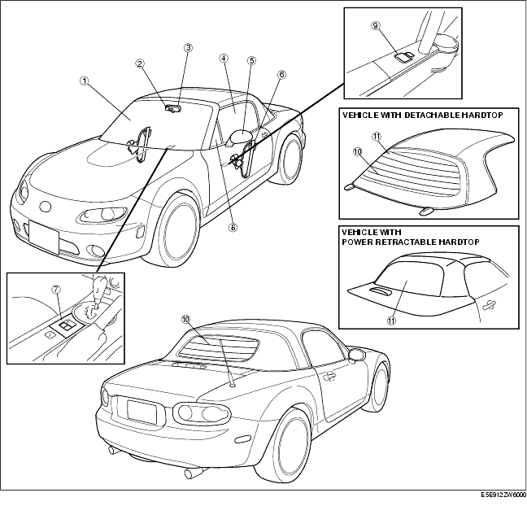

Workshop Manual ➭ BODY & ACCESSORIES ➭ GLASS/WINDOWS/MIRRORS ➭ GLASS/WINDOWS/MIRRORS LOCATION INDEX
GLASS/WINDOWS/MIRRORS LOCATION INDEX
id091200413600
{: #wp1059780}

|
Windshield {: #wp1059811} (See WINDSHIELD REMOVAL.) {: #wp1059875} (See WINDSHIELD INSTALLATION.) {: #wp1059889} |
|
|---|---|
|
2 {: #wp1059849} |
Base {: #wp1059852} (See BASE REMOVAL.) {: #wp1059913} (See BASE INSTALLATION.) {: #wp1059927} |
|
3 {: #wp1059856} |
Rearview mirror {: #wp1059859} (See REARVIEW MIRROR REMOVAL/INSTALLATION.) {: #wp1059951} |
|
4 {: #wp1059963} |
Door glass {: #wp1059966} (See DOOR GLASS REMOVAL/INSTALLATION.) {: #wp1059992} (See DOOR GLASS ADJUSTMENT.) {: #wp1060006} |
|
5 {: #wp1060018} |
Power outer mirror {: #wp1060021} (See POWER OUTER MIRROR REMOVAL/INSTALLATION.) {: #wp1060051} (See POWER OUTER MIRROR DISASSEMBLY/ASSEMBLY.) {: #wp1060065} (See POWER OUTER MIRROR INSPECTION.) {: #wp1060079} |
|
6 {: #wp1060091} |
Power window regulator {: #wp1060094} (See POWER WINDOW REGULATOR REMOVAL/INSTALLATION.) {: #wp1060130} (See POWER WINDOW REGULATOR DISASSEMBLY/ASSEMBLY.) {: #wp1060144} (See POWER WINDOW MOTOR INSPECTION.) {: #wp1060158} |
|
7 {: #wp1060170} |
Power window main switch {: #wp1060173} (See POWER WINDOW MAIN SWITCH REMOVAL/INSTALLATION.) {: #wp1060215} (See POWER WINDOW MAIN SWITCH INSPECTION [POWER RETRACTABLE HARDTOP].) {: #wp1060229} (See POWER WINDOW MAIN SWITCH INSPECTION [EXCEPT POWER RETRACTABLE HARDTOP].) {: #wp1060243} |
|
8 {: #wp1060255} |
Door quarter glass {: #wp1060258} (See DOOR QUARTER GLASS REMOVAL/INSTALLATION.) {: #wp1060306} |
|
9 {: #wp1060318} |
Power outer mirror switch {: #wp1060321} (See POWER OUTER MIRROR SWITCH REMOVAL/INSTALLATION.) {: #wp1060371} (See POWER OUTER MIRROR SWITCH INSPECTION.) {: #wp1060385} |
|
10 {: #wp1060397} |
Rear window defroster {: #wp1060400} (See FILAMENT INSPECTION.) {: #wp1060454} (See FILAMENT REPAIR.) {: #wp1060468} |
|
11 {: #wp1060480} |
Rear window glass {: #wp1060483} (See REAR WINDOW GLASS REMOVAL [DETACHABLE HARDTOP].) {: #wp1060541} (See REAR WINDOW GLASS INSTALLATION [DETACHABLE HARDTOP].) {: #wp1060555} (See REAR WINDOW GLASS REMOVAL/INSTALLATION [POWER RETRACTABLE HARDTOP].) {: #wp1060569} |